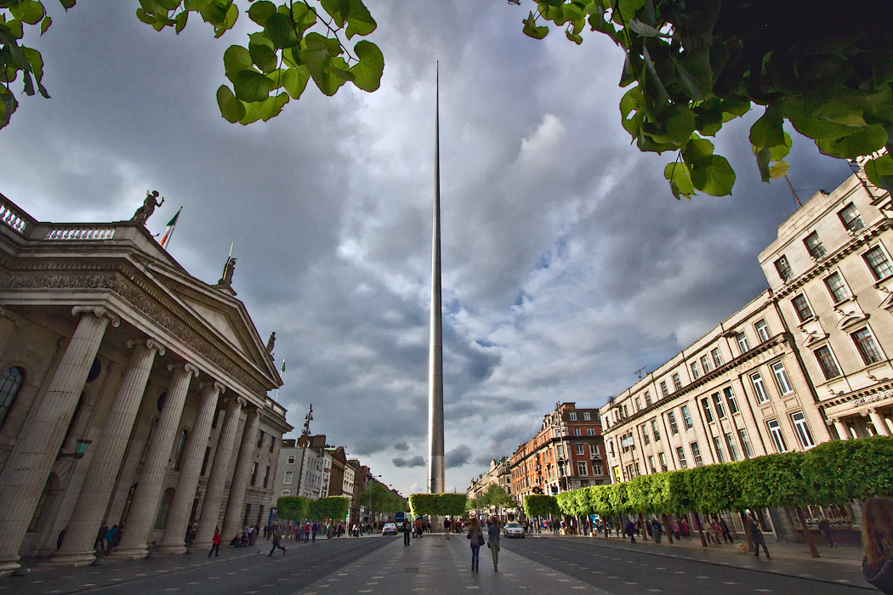

Dublin is the capital and largest city of Ireland. Situated on a bay on the east coast, at the mouth of the River Liffey, it lies within the province of Leinster. It is bordered on the south by the Dublin Mountains, a part of the Wicklow Mountains range. It has an urban area population of 1,173,179, while the population of the Dublin Region (formerly County Dublin) as of 2016 was 1,347,359. The population of the Greater Dublin Area was 1,904,806 per the 2016 census.
There is archaeological debate regarding precisely where Dublin was established by the Gaels in or before the 7th century AD. Later expanded as a Viking settlement, the Kingdom of Dublin, the city became Ireland's principal settlement following the Norman invasion. The city expanded rapidly from the 17th century and was briefly the second largest city in the British Empire after the Acts of Union in 1800. Following the partition of Ireland in 1922, Dublin became the capital of the Irish Free State, later renamed Ireland.
Dublin is an historical and contemporary centre for education, the arts, administration and industry. As of 2018 the city was listed by the Globalization and World Cities Research Network (GaWC) as a global city, with a ranking of "Alpha minus", which places it amongst the top thirty cities in the world.